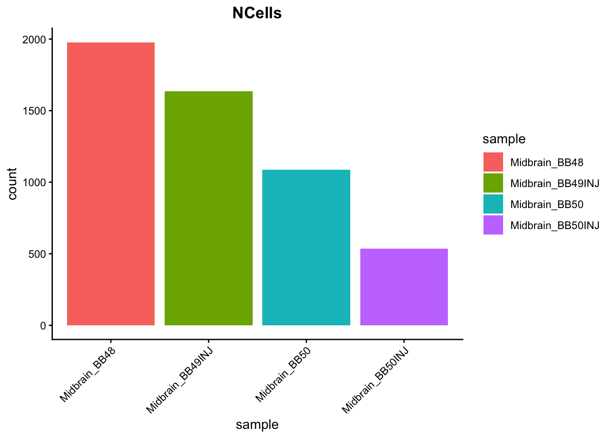
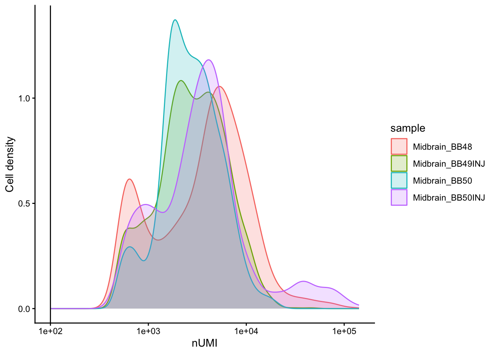
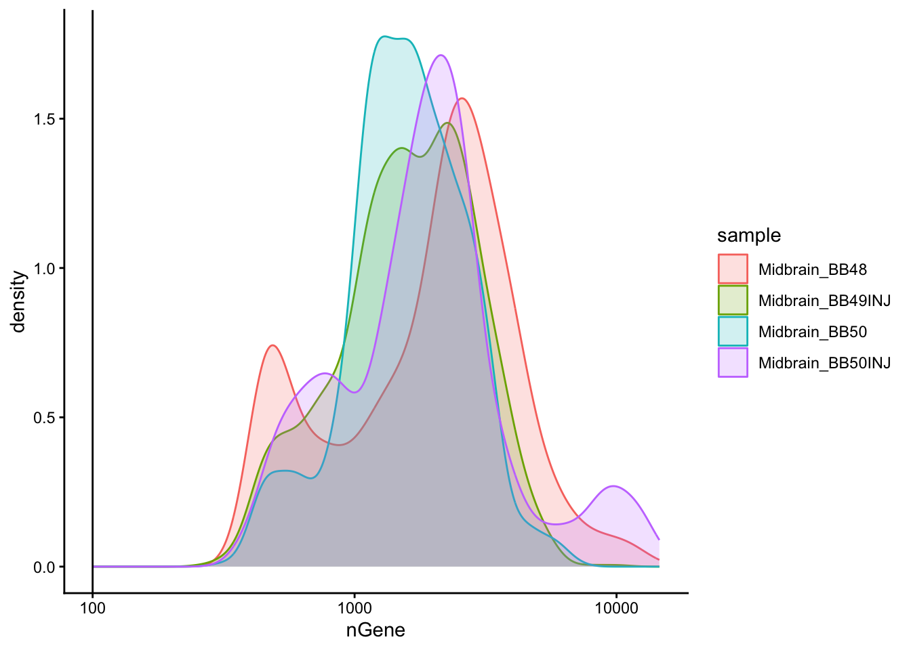
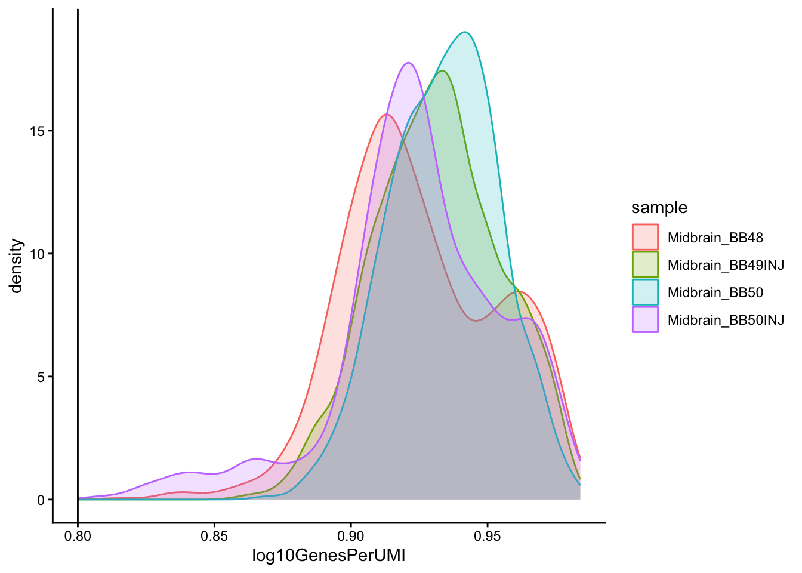
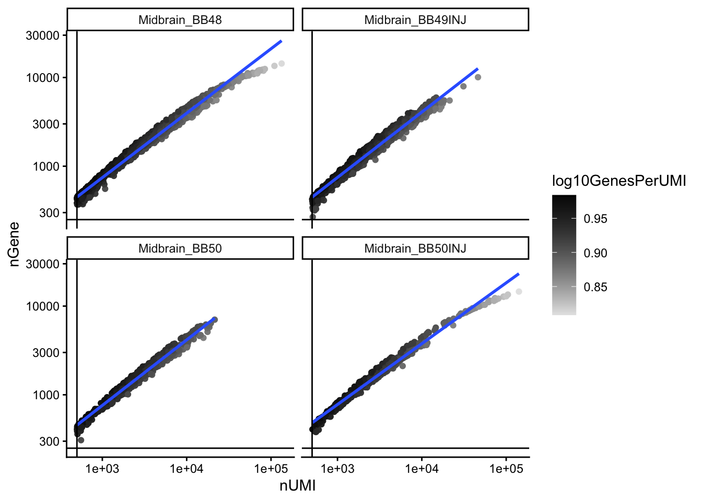
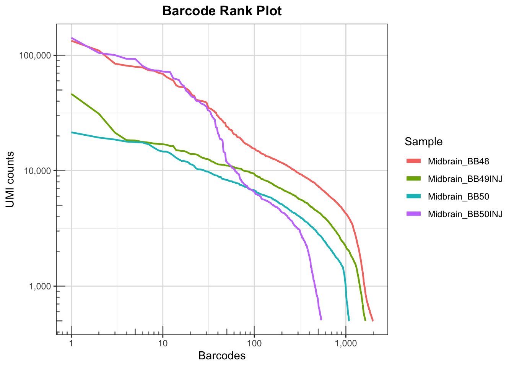

library(Seurat)
library(tidyverse)
library(hdf5r)
library(patchwork)
library(presto)
library(glmGamPoi)snRNA-seq Quality Control
tissue <- c("Midbrain")
sample_names <- c("BB48", "BB49INJ", "BB50", "BB50INJ")
# Empty list to populate seurat object for each sample
list_seurat <- list()
for (sample in sample_names) {
# Path to data directory
data_dir <- file.path("data/ssrnaseq_data", tissue, sample)
# Create a Seurat object for each sample
seurat_data <- Read10X(data.dir = data_dir)
seurat_obj <- CreateSeuratObject(
counts = seurat_data,
min.features = 1,
project = paste0(tissue, "_", sample)
)
# Save seurat object to list
list_seurat[[sample]] <- seurat_obj
}merged_seurat <- merge(
x = list_seurat[[1]],
y = list_seurat[2:length(list_seurat)],
add.cell.id = names(list_seurat)
)
merged_seurat <- JoinLayers(merged_seurat)
merged_seuratAn object of class Seurat
30521 features across 5234 samples within 1 assay
Active assay: RNA (30521 features, 0 variable features)
1 layer present: counts# Check that the merged object has the appropriate sample-specific prefixes
head(merged_seurat@meta.data) orig.ident nCount_RNA nFeature_RNA
BB48_AAACCCTGTCTGGCAC-1 Midbrain_BB48 9358 3816
BB48_AAACCCTGTTCGCTAG-1 Midbrain_BB48 502 386
BB48_AAACGATGTCTTACCC-1 Midbrain_BB48 8015 3381
BB48_AAACGATGTGGCCAGA-1 Midbrain_BB48 517 433
BB48_AAACGATGTTATAGGG-1 Midbrain_BB48 7065 3208
BB48_AAACTCCGTAAGCAAT-1 Midbrain_BB48 626 485tail(merged_seurat@meta.data) orig.ident nCount_RNA nFeature_RNA
BB50INJ_TGTACTGAGGGCCATT-1 Midbrain_BB50INJ 11366 3644
BB50INJ_TGTACTGAGGGTATGG-1 Midbrain_BB50INJ 4424 2230
BB50INJ_TGTAGCCAGTGAACCC-1 Midbrain_BB50INJ 4303 2224
BB50INJ_TGTAGTTAGCATGTAT-1 Midbrain_BB50INJ 2817 1550
BB50INJ_TGTAGTTAGTGGCCTG-1 Midbrain_BB50INJ 537 461
BB50INJ_TGTCCAAAGTGACCCG-1 Midbrain_BB50INJ 833 669merged_seurat$log10GenesPerUMI <- log10(merged_seurat$nFeature_RNA) / log10(merged_seurat$nCount_RNA)
# Create metadata dataframe
metadata <- merged_seurat@meta.data
# Add cell IDs to metadata
metadata$cells <- rownames(metadata)
# Create sample column
metadata$sample <- metadata$orig.ident
# Rename columns
metadata <- metadata %>%
dplyr::rename(nUMI = nCount_RNA,
nGene = nFeature_RNA)
# Add metadata back to Seurat object
merged_seurat@meta.data <- metadata
# Create .RData object to load at any time
save(merged_seurat, file=file.path("data/ssrnaseq_data/",tissue,paste0(tissue,"_merged_filtered_seurat.RData")))# Visualize the number of cell counts per sample
metadata %>%
ggplot(aes(x=sample, fill=sample)) +
geom_bar() +
theme_classic() +
theme(axis.text.x = element_text(angle = 45, vjust = 1, hjust=1)) +
theme(plot.title = element_text(hjust=0.5, face="bold")) +
ggtitle("NCells")
# Visualize the number UMIs/transcripts per cell
metadata %>%
ggplot(aes(color=sample, x=nUMI, fill= sample)) +
geom_density(alpha = 0.2) +
scale_x_log10() +
theme_classic() +
ylab("Cell density") +
geom_vline(xintercept = 100)
# Visualize the distribution of genes detected per cell via histogram
metadata %>%
ggplot(aes(color=sample, x=nGene, fill= sample)) +
geom_density(alpha = 0.2) +
theme_classic() +
scale_x_log10() +
geom_vline(xintercept = 100)
# Visualize the overall complexity of the gene expression by visualizing
# the genes detected per UMI (novelty score)
metadata %>%
ggplot(aes(x=log10GenesPerUMI, color = sample, fill=sample)) +
geom_density(alpha = 0.2) +
theme_classic() +
geom_vline(xintercept = 0.8)
# Visualize the correlation between genes detected and number of UMIs and
# determine whether strong presence of cells with low numbers of genes/UMIs
metadata %>%
ggplot(aes(x=nUMI, y=nGene, color=log10GenesPerUMI)) +
geom_point() +
scale_colour_gradient(low = "gray90", high = "black") +
stat_smooth(method=lm) +
scale_x_log10() +
scale_y_log10() +
theme_classic() +
geom_vline(xintercept = 500) +
geom_hline(yintercept = 250) +
facet_wrap(~sample)
# Barcode rank plot (knee plot): for each sample, rank barcodes by UMI count
# (descending) and plot rank vs. UMI count on a log-log scale.
# The "knee" separates real cells (high UMI) from empty droplets (low UMI).
metadata %>%
group_by(sample) %>%
arrange(desc(nUMI), .by_group = TRUE) %>%
mutate(rank = row_number()) %>%
ungroup() %>%
ggplot(aes(x = rank, y = nUMI, color = sample)) +
geom_line(linewidth = 0.8) +
scale_x_log10(labels = scales::label_comma()) +
scale_y_log10(labels = scales::label_comma()) +
annotation_logticks(sides = "bl", color = "grey50") +
theme_bw() +
theme(
panel.grid.major = element_line(color = "grey88"),
panel.grid.minor = element_line(color = "grey93"),
plot.title = element_text(hjust = 0.5, face = "bold")
) +
labs(
title = "Barcode Rank Plot",
x = "Barcodes",
y = "UMI counts",
color = "Sample"
) +
guides(color = guide_legend(override.aes = list(linewidth = 2)))